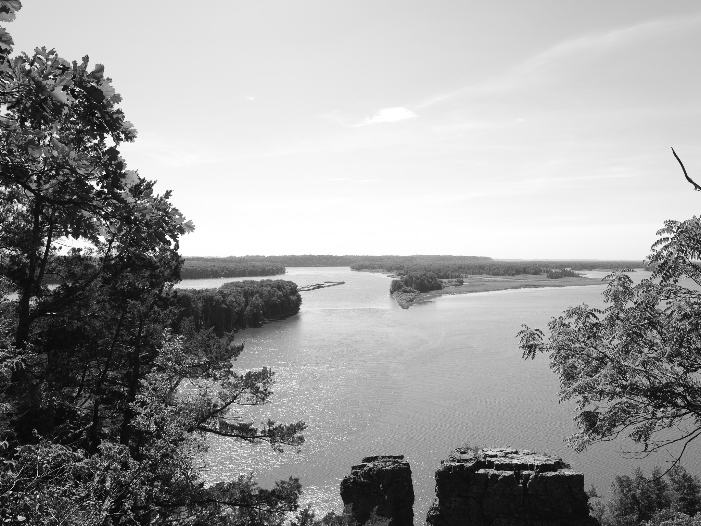
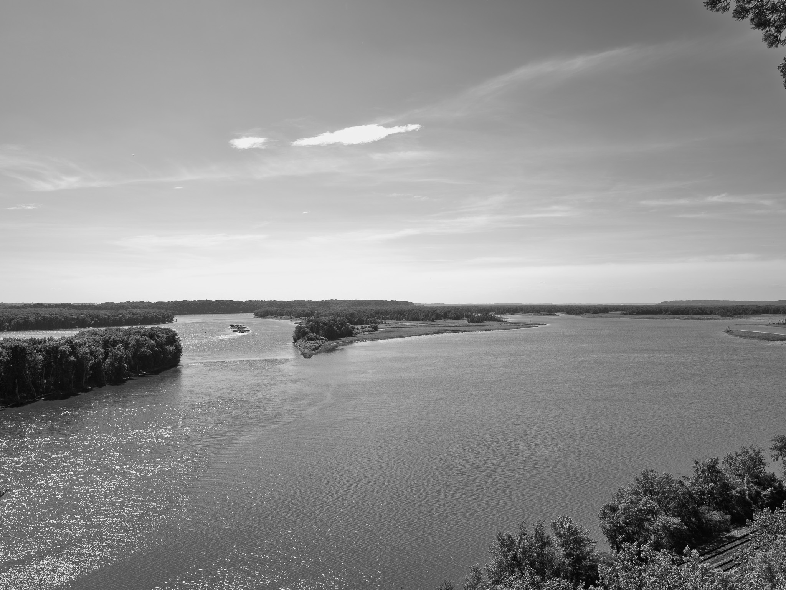
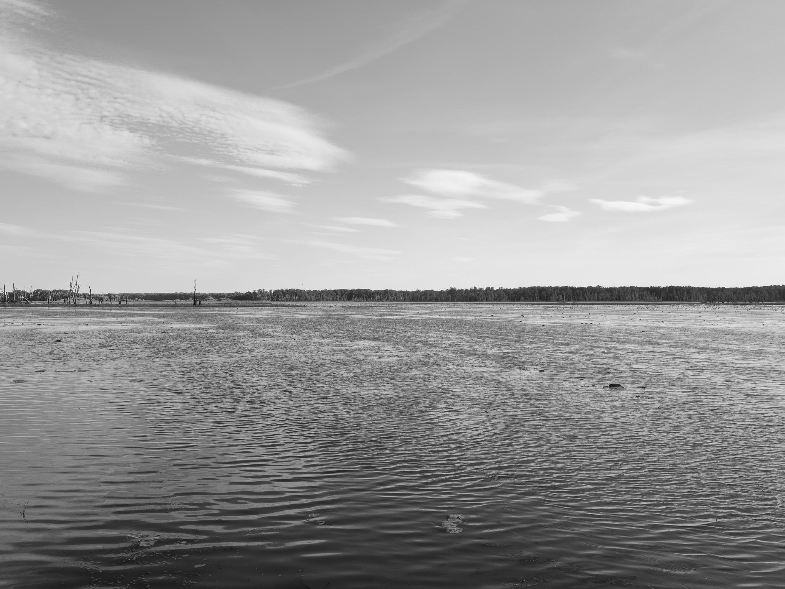
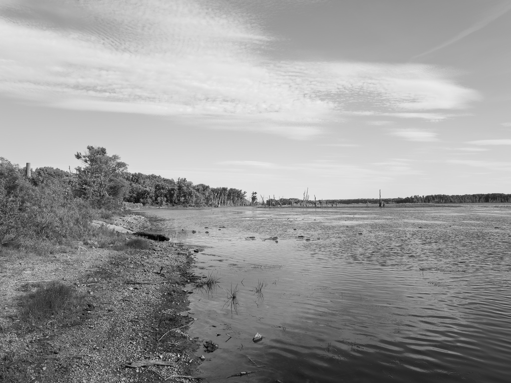
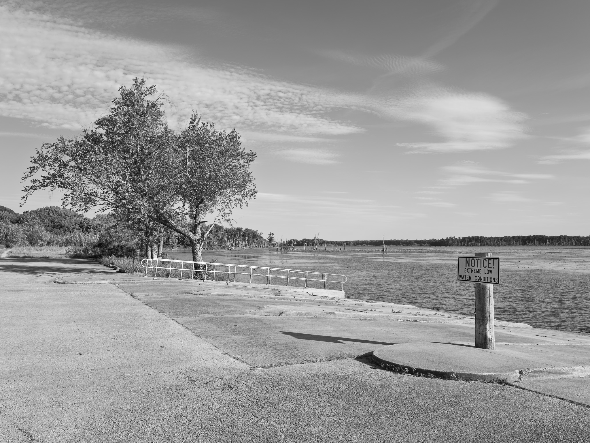
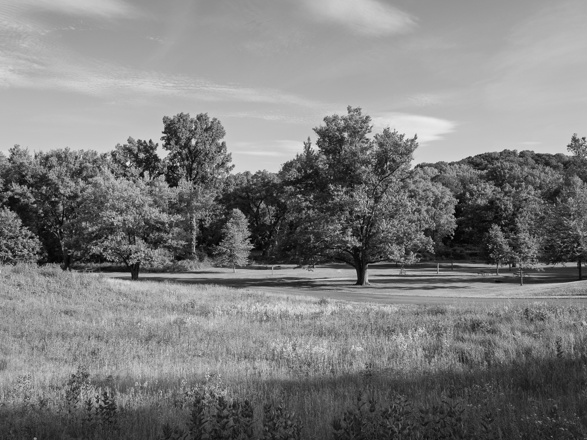

Public Lands Institute
Map
Archive
About
Mississippi Palisades State Park
IL

Mississippi Palisades State Park 1 · 2026-06-04
_DSF2464.jpg

Mississippi Palisades State Park 2 · 2026-06-04
_DSF2469.jpg

Mississippi Palisades State Park 3 · 2026-06-04
_DSF2480.jpg

Mississippi Palisades State Park 4 · 2026-06-04
_DSF2483.jpg

Mississippi Palisades State Park 5 · 2026-06-04
_DSF2494.jpg

Mississippi Palisades State Park 6 · 2026-06-04
_DSF2495.jpg
View all 6 images →
← Maquoketa Caves State Park
Mounds State Park →